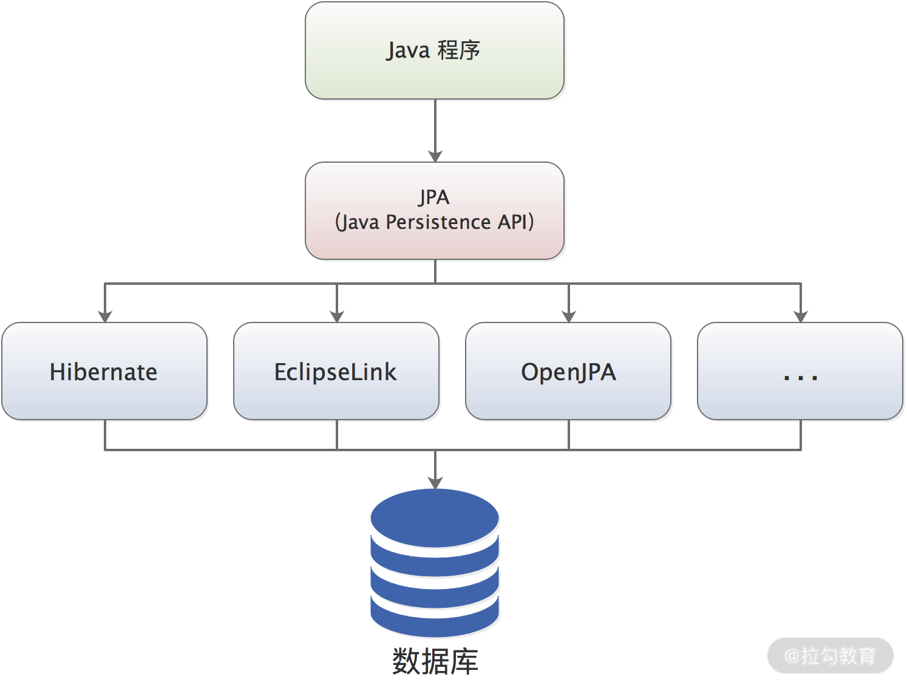
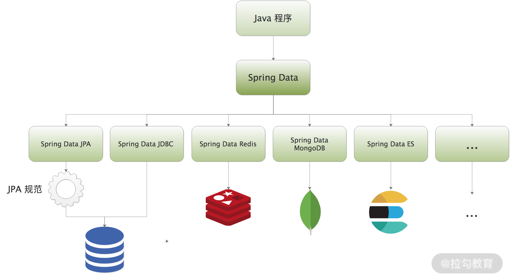
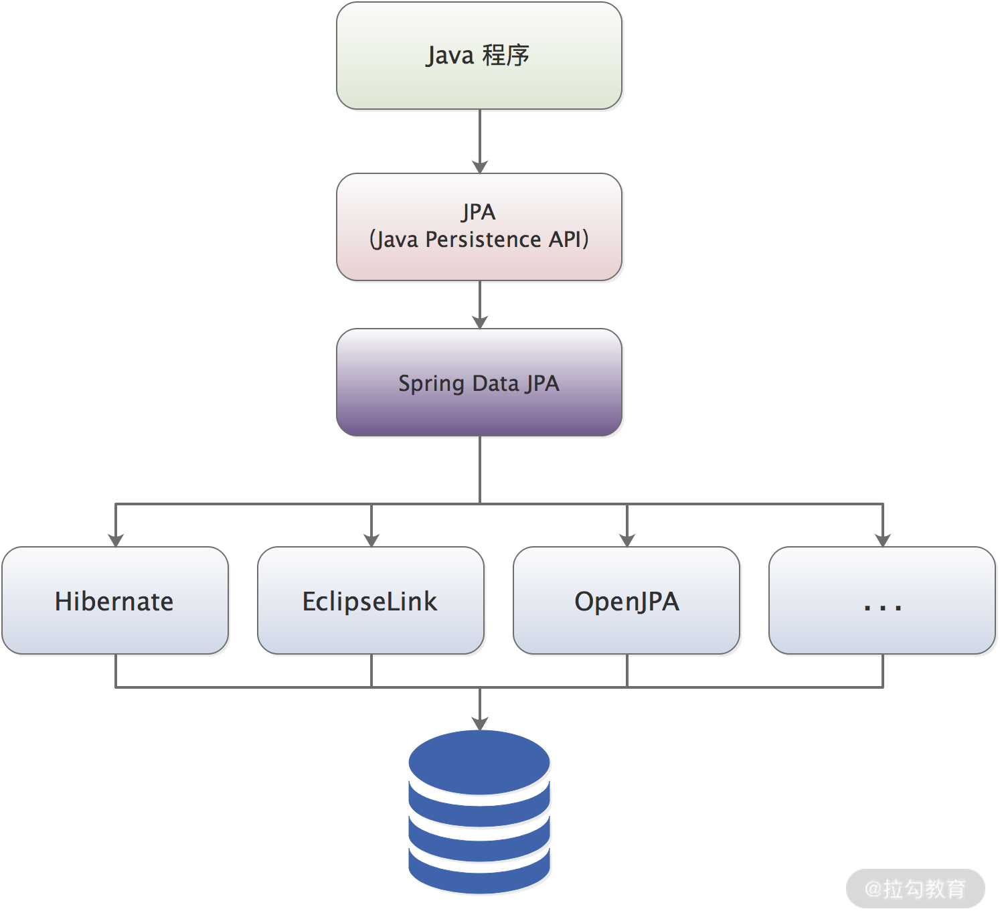

- 00 开篇词 领略 MyBatis 设计思维，突破持久化技术瓶颈.md.html
- 01 常见持久层框架赏析，到底是什么让你选择 MyBatis？.md.html
- 02 订单系统持久层示例分析，20 分钟带你快速上手 MyBatis.md.html
- 03 MyBatis 源码环境搭建及整体架构解析.md.html
- 04 MyBatis 反射工具箱：带你领略不一样的反射设计思路.md.html
- 05 数据库类型体系与 Java 类型体系之间的“爱恨情仇”.md.html
- 06 日志框架千千万，MyBatis 都能兼容的秘密是什么？.md.html
- 07 深入数据源和事务，把握持久化框架的两个关键命脉.md.html
- 08 Mapper 文件与 Java 接口的优雅映射之道.md.html
- 09 基于 MyBatis 缓存分析装饰器模式的最佳实践.md.html
- 10 鸟瞰 MyBatis 初始化，把握 MyBatis 启动流程脉络（上）.md.html
- 11 鸟瞰 MyBatis 初始化，把握 MyBatis 启动流程脉络（下）.md.html
- 12 深入分析动态 SQL 语句解析全流程（上）.md.html
- 13 深入分析动态 SQL 语句解析全流程（下）.md.html
- 14 探究 MyBatis 结果集映射机制背后的秘密（上）.md.html
- 15 探究 MyBatis 结果集映射机制背后的秘密（下）.md.html
- 16 StatementHandler：参数绑定、SQL 执行和结果映射的奠基者.md.html
- 17 Executor 才是执行 SQL 语句的幕后推手（上）.md.html
- 18 Executor 才是执行 SQL 语句的幕后推手（下）.md.html
- 19 深入 MyBatis 内核与业务逻辑的桥梁——接口层.md.html
- 20 插件体系让 MyBatis 世界更加精彩.md.html
- 21 深挖 MyBatis 与 Spring 集成底层原理.md.html
- 22 基于 MyBatis 的衍生框架一览.md.html
- 23 结束语 会使用只能默默“搬砖”，懂原理才能快速晋升.md.html
01 常见持久层框架赏析，到底是什么让你选择 MyBatis？
在绝大多数在线应用场景中，数据是存储在关系型数据库中的，当然，有特殊要求的场景中，我们也会将其他持久化存储（如 ElasticSearch、HBase、MongoDB 等）作为辅助存储。但不可否认的是，关系型数据库凭借几十年的发展、生态积累、众多成功的案例，依然是互联网企业的核心存储。
作为一个 Java 开发者，几乎天天与关系型数据库打交道，在生产环境中常用的关系型数据库产品有 SQL Server、MySQL、Oracle 等。在使用这些数据库产品的时候，基本上是如下思路：
- 在写 Java 代码的过程中，使用的是面向对象的思维去实现业务逻辑；
- 在设计数据库表的时候，考虑的是第一范式、第二范式和第三范式；
- 在操作数据库记录的时候，使用 SQL 语句以及集合思维去考虑表的连接、条件语句、子查询等的编写。
这个时候，就需要一座桥梁将 Java 类（或是其他数据结构）与关系型数据库中的表，以及 Java 对象与表中的数据映射起来，实现 Java 程序与数据库之间的交互。
JDBC（Java DataBase Connectivity）是 Java 程序与关系型数据库交互的统一 API。实际上，JDBC 由两部分 API 构成：第一部分是面向 Java 开发者的 Java API，它是一个统一的、标准的 Java API，独立于各个数据库产品的接口规范；第二部分是面向数据库驱动程序开发者的 API，它是由各个数据库厂家提供的数据库驱动，是第一部分接口规范的底层实现，用于连接具体的数据库产品。
在实际开发 Java 程序时，我们可以通过 JDBC 连接到数据库，并完成各种各样的数据库操作，例如 CRUD 数据、执行 DDL 语句。这里以 JDBC 编程中执行一条 Select 查询语句作为例子，说明 JDBC 操作的核心步骤，具体如下：
- 注册数据库驱动类，指定数据库地址，其中包括 DB 的用户名、密码及其他连接信息；
- 调用 DriverManager.getConnection() 方法创建 Connection 连接到数据库；
- 调用 Connection 的 createStatement() 或 prepareStatement() 方法，创建 Statement 对象，此时会指定 SQL（或是 SQL 语句模板 + SQL 参数）；
- 通过 Statement 对象执行 SQL 语句，得到 ResultSet 对象，也就是查询结果集；
- 遍历 ResultSet，从结果集中读取数据，并将每一行数据库记录转换成一个 JavaBean 对象；
- 关闭 ResultSet 结果集、Statement 对象及数据库 Connection，从而释放这些对象占用的底层资源。
无论是执行查询操作，还是执行其他 DML 操作，1、2、3、4、6 这些步骤都会重复出现。为了简化重复逻辑，提高代码的可维护性，可以将上述重复逻辑封装到一个类似 DBUtils 的工具类中，在使用时只需要调用 DBUtils 工具类中的方法即可。当然，我们也可以使用“反射+配置”的方式，将步骤 5 中关系模型到对象模型的转换进行封装，但是这种封装要做到通用化且兼顾灵活性，就需要一定的编程功底。
为了处理上述代码重复的问题以及后续的维护问题，我们在实践中会进行一系列评估，选择一款适合项目需求、符合人员能力的 ORM（Object Relational Mapping，对象-关系映射）框架来封装 1~6 步的重复性代码，实现对象模型、关系模型之间的转换。这正是ORM 框架的核心功能：根据配置（配置文件或是注解）实现对象模型、关系模型两者之间无感知的映射（如下图）。

对象模型与关系模型的映射
在生产环境中，数据库一般都是比较稀缺的，数据库连接也是整个服务中比较珍贵的资源之一。建立数据库连接涉及鉴权、握手等一系列网络操作，是一个比较耗时的操作，所以我们不能像上述 JDBC 基本操作流程那样直接释放掉数据库连接，否则持久层很容易成为整个系统的性能瓶颈。
Java 程序员一般会使用数据库连接池的方式进行优化，此时就需要引入第三方的连接池实现，当然，也可以自研一个连接池，但是要处理连接活跃数、控制连接的状态等一系列操作还是有一定难度的。另外，有一些查询返回的数据是需要本地缓存的，这样可以提高整个程序的查询性能，这就需要缓存的支持。
如果没有 ORM 框架的存在，这就需要我们 Java 开发者熟悉相关连接池、缓存等组件的 API 并手动编写一些“黏合”代码来完成集成，而且这些代码重复度很高，这显然不是我们希望看到的结果。
很多 ORM 框架都支持集成第三方缓存、第三方数据源等常用组件，并对外提供统一的配置接入方式，这样我们只需要使用简单的配置即可完成第三方组件的集成。当我们需要更换某个第三方组件的时候，只需要引入相关依赖并更新配置即可，这就大大提高了开发效率以及整个系统的可维护性。
下面我们就简单介绍一下在实践中常用的几种 ORM 框架。
Hibernate
Hibernate 是 Java 生态中著名的 ORM 框架之一。Hibernate 现在也在扩展自己的生态，开始支持多种异构数据的持久化，不仅仅提供 ORM 框架，还提供了 Hibernate Search 来支持全文搜索，提供 validation 来进行数据校验，提供 Hibernate OGM 来支持 NoSQL 解决方案。
这里我们要重点讲解的是 Hibernate ORM 的相关内容，截至 2020 年底，Hibernate ORM 的最新版本是 5.4 版本，6.0 版本还正在开发中。作为一个老牌的 ORM 框架，Hibernate 经受住了 Java EE 企业级应用的考验，一度成为 Java ORM 领域的首选框架。
在使用 Hibernate 的时候，Java 开发可以使用映射文件或是注解定义 Java 语言中的类与数据库中的表之间的各种映射关系，这里使用到的映射文件后缀为“.hbm.xml”。hbm.xml 映射文件将一张数据库表与一个 Java 类进行关联之后，该数据库表中的每一行记录都可以被转换成对应的一个 Java 对象。正是由于 Hibernate 映射的存在，Java 开发只需要使用面向对象思维就可以完成数据库表的设计。
在 Java 这种纯面向对象的语言中，两个 Java 对象之间可能存在一对一、一对多或多对多等复杂关联关系。Hibernate 中的映射文件也必须要能够表达这种复杂关联关系才能够满足我们的需求，同时，还要能够将这种关联关系与数据库中的关联表、外键等一系列关系模型中的概念进行映射，这也就是 ORM 框架中常提到的“关联映射”。
下面我们就来结合示例介绍“一对多”关联关系。例如，一个顾客（Customer）可以创建多个订单（Order），而一个订单（Order）只属于一个顾客（Customer），两者之间存在一对多的关系。在 Java 程序中，可以在 Customer 类中添加一个 List 类型的字段来维护这种一对多的关系；在数据库中，可以在订单表（t_order）中添加一个 customer_id 列作为外键，指向顾客表（t_customer）的主键 id，从而维护这种一对多的关系，如下图所示：

关系模型中的一对多和对象模型中的一对多
在 Hibernate 中，可以通过如下 Customer.hbm.xml 配置文件将这两种关系进行映射：
<hibernate-mapping>
<!-- 这里指定了Customer类与t_customer表之间的映射 -->
<class name="com.mybatis.test.Customer" table="t_customer">
<!-- Customer类中的id属性与t_customer表中主键id之间的映射 -->
<id name="id" column="id"/>
<!-- Customer类中的name属性与t_customer表中name字段之间的映射 -->
<property name="name" column="name"/>
<!-- Customer指定了Order与Customer 一对多的映射关系 -->
<set name="orders" cascade="save,update,delete">
<key column="customer_id"/>
<one-to-many class="com.mybatis.test.Order"/>
</set>
</class>
</hibernate-mapping>
如果是双向关联，则在 Java 代码中，可以直接在 Order 类中添加 Customer 类型的字段指向关联的 Customer 对象，并在相应的 Order.hbm.xml 配置文件中进行如下配置：
<hibernate-mapping>
<!-- 这里指定了Order类与t_order表之间的映射 -->
<class name="com.mybatis.test.Order" table="t_order">
<!-- Order类中的id属性与t_order表中主键id之间的映射 -->
<id name="id" column="id"/>
<!-- Order类中的address属性与t_order表中address列之间的映射 -->
<property name="address" column="address"/>
<!-- Order类中的tele属性与t_order表中tele列之间的映射 -->
<property name="tele" column="tele"/>
<!-- Order类中customer属性与t_order表中customer_id之间的映射，
同时也指定Order与Customer之间的多对一的关系 -->
<many-to-one name="customer" column="customer_id"></many-to-one>
</class>
</hibernate-mapping>
一对一、多对多等关联映射在 Hibernate 映射文件中，都定义了相应的 XML 标签，原理与“一对多”基本一致，只是使用方式和场景略有不同，这里就不再展开介绍，你若感兴趣的话可以参考 Hibernate 的官方文档进行学习。
除了能够完成面向对象模型与数据库中关系模型的映射，Hibernate 还可以帮助我们屏蔽不同数据库产品中 SQL 语句的差异。
我们知道，虽然目前有 SQL 标准，但是不同的关系型数据库产品对 SQL 标准的支持有细微不同，这就会出现一些非常尴尬的情况，例如，一条 SQL 语句在 MySQL 上可以正常执行，而在 Oracle 数据库上执行会报错。
Hibernate封装了数据库层面的全部操作，Java 程序员不再需要直接编写 SQL 语句，只需要使用 Hibernate 提供的 API 即可完成数据库操作。
例如，Hibernate 为用户提供的 Criteria 是一套灵活的、可扩展的数据操纵 API，最重要的是 Criteria 是一套面向对象的 API，使用它操作数据库的时候，Java 开发者只需要关注 Criteria 这套 API 以及返回的 Java 对象，不需要考虑数据库底层如何实现、SQL 语句如何编写，等等。
下面是 Criteria API 的一个简单示例：
// 创建Criteria对象，用来查询Customer对象
Criteria criteria = session.createCriteria(Customer.class, "u");
//查询出id大于0，且名字中以yang开头的顾客数据
List<Customer> list = criteria.add(Restrictions.like("name","yang%"))
.add(Restrictions.gt("id", 0))
.list();
除了 Criteria API 之外，Hibernate 还提供了一套面向对象的查询语言—— HQL（Hibernate Query Language）。从语句的结构上来看，HQL 语句与 SQL 语句十分类似，但这二者也是有区别的：HQL 是面向对象的查询语言，而 SQL 是面向关系型的查询语言。
在实现复杂数据库操作的时候，我们可以使用 HQL 这种面向对象的查询语句来实现，Hibernate 的 HQL 引擎会根据底层使用的数据库产品，将 HQL 语句转换成合法的 SQL 语句。
Hibernate 通过其简洁的 API 以及统一的 HQL 语句，帮助上层程序屏蔽掉底层数据库的差异，增强了程序的可移植性。
另外，Hibernate 还具有如下的一些其他优点：
- Hibernate API 本身没有侵入性，也就是说，业务逻辑感知不到 Hibernate 的存在，也不需要继承任何 Hibernate 包中的接口；
- Hibernate 默认提供一级缓存、二级缓存（一级缓存默认开启，二级缓存需要配置开启），这两级缓存可以降低数据库的查询压力，提高服务的性能；
- Hibernate 提供了延迟加载的功能，可以避免无效查询；
- Hibernate 还提供了由对象模型自动生成数据库表的逆向操作。
但需要注意的是，Hibernate 并不是一颗“银弹”，我们无法在面向对象模型中找到数据库中所有概念的映射，例如，索引、函数、存储过程等。在享受 Hibernate 带来便捷的同时，我们还需要忍受它的一些缺点。例如，索引对提升数据库查询性能有很大帮助，我们建立索引并适当优化 SQL 语句，就会让数据库使用合适的索引提高整个查询的速度。但是，我们很难修改 Hibernate 生成的 SQL 语句。为什么这么说呢？因为在一些场景中，数据库设计非常复杂，表与表之间的关系错综复杂，Hibernate 引擎生成的 SQL 语句会非常难以理解，要让生成的 SQL 语句使用正确的索引更是难上加难，这就很容易生成慢查询 SQL。
另外，在一些大数据量、高并发、低延迟的场景中，Hibernate 在性能方面带来的损失就会逐渐显现出来。
当然，从其他角度来看 Hibernate，还会有一些其他的问题，这里就不再展开介绍，你若感兴趣的话可以自行去查阅一些资料进行深入了解。
Spring Data JPA
在开始介绍 Spring Data JPA 之前，我们先要来介绍一下 JPA（Java Persistence API）规范。
JPA 是在 JDK 5.0 后提出的 Java 持久化规范（JSR 338）。JPA 规范本身是为了整合市面上已有的 ORM 框架，结束 Hibernate、EclipseLink、JDO 等 ORM 框架各自为战的割裂局面，简化 Java 持久层开发。
JPA 规范从现有的 ORM 框架中借鉴了很多优点，例如，Gavin King 作为 Hibernate 创始人，同时也参与了 JPA 规范的编写，所以在 JPA 规范中可以看到很多与 Hibernate 类似的概念和设计。
既然 JPA 是一个持久化规范，没有提供具体持久化实现，那谁来提供实现呢？答案是市面上的 ORM 框架，例如，Hibernate、EclipseLink 等都提供了符合 JPA 规范的具体实现，如下图所示：

JPA 生态图
JPA 有三个核心部分：ORM 映射元数据、操作实体对象 API 和面向对象的查询语言（JPQL）。这与 Hibernate 的核心功能基本类似，就不再重复讲述。
Java 开发者应该都知道“Spring 全家桶”的强大，Spring 目前已经成为事实上的标准了，很少有企业会完全离开 Spring 来开发 Java 程序。现在的 Spring 已经不仅仅是最早的 IoC 容器了，而是整个 Spring 生态，例如，Spring Cloud、Spring Boot、Spring Security 等，其中就包含了 Spring Data。
Spring Data 是 Spring 在持久化方面做的一系列扩展和整合，下图就展示了 Spring Data 中的子项目：

Spring Data 生态图
Spring Data 中的每个子项目都对应一个持久化存储，通过不断的整合接入各种持久化存储的能力，Spring 的生态又向前迈进了一大步，其中最常被大家用到的应该就是 Spring Data JPA。
Spring Data JPA 是符合 JPA 规范的一个 Repository 层的实现，其所在的位置如下图所示：

Spring Data JPA 生态图
虽然市面上的绝大多数 ORM 框架都实现了 JPA 规范，但是它们在 JPA 基础上也有各自的发展和修改，这样导致我们在使用 JPA 的时候，依旧无法无缝切换底层的 ORM 框架实现。而使用 Spring Data JPA 时，由于Spring Data JPA 帮助我们抹平了各个 ORM 框架的差异，从而可以让我们的上层业务无缝地切换 ORM 实现框架。
MyBatis
在这一讲的最后，结合上述两个 ORM 框架的知识点，我们再来介绍一下本课程的主角—— MyBatis。
Apache 基金会中的 iBatis 项目是 MyBatis 的前身。iBatis 项目由于各种原因，在 Apache 基金会并没有得到很好的发展，最终于 2010 年脱离 Apache，并更名为 MyBatis。三年后，也就是 2013 年，MyBatis 将源代码迁移到了 GitHub。
MyBatis 中一个重要的功能就是可以帮助 Java 开发封装重复性的 JDBC 代码，这与前文分析的 Spring Data JPA 、Hibernate 等 ORM 框架一样。MyBatis 封装重复性代码的方式是通过 Mapper 映射配置文件以及相关注解，将 ResultSet 结果映射为 Java 对象，在具体的映射规则中可以嵌套其他映射规则和必要的子查询，这样就可以轻松实现复杂映射的逻辑，当然，也能够实现一对一、一对多、多对多关系映射以及相应的双向关系映射。
很多人会将 Hibernate 和 MyBatis 做比较，认为 Hibernate 是全自动 ORM 框架，而 MyBatis 只是半自动的 ORM 框架或是一个 SQL 模板引擎。其实，这些比较都无法完全说明一个框架比另一个框架先进，关键还是看应用场景。
MyBatis 相较于 Hibernate 和各类 JPA 实现框架更加灵活、更加轻量级、更加可控。
- 我们可以在 MyBatis 的 Mapper 映射文件中，直接编写原生的 SQL 语句，应用底层数据库产品的方言，这就给了我们直接优化 SQL 语句的机会；
- 我们还可以按照数据库的使用规则，让原生 SQL 语句选择我们期望的索引，从而保证服务的性能，这就特别适合大数据量、高并发等需要将 SQL 优化到极致的场景；
- 在编写原生 SQL 语句时，我们也能够更加方便地控制结果集中的列，而不是查询所有列并映射对象后返回，这在列比较多的时候也能起到一定的优化效果。（当然，Hibernate 也能实现这种效果，需要在实体类添加对应的构造方法。）
在实际业务中，对同一数据集的查询条件可能是动态变化的，如果你有使用 JDBC 或其他类似框架的经历应该能体会到，拼接 SQL 语句字符串是一件非常麻烦的事情，尤其是条件复杂的场景中，拼接过程要特别小心，要确保在合适的位置添加“where”“and”“in”等 SQL 语句的关键字以及空格、逗号、等号等分隔符，而且这个拼接过程非常枯燥、没有技术含量，可能经过反复调试才能得到一个可执行的 SQL 语句。
MyBatis 提供了强大的动态 SQL 功能来帮助我们开发者摆脱这种重复劳动，我们只需要在映射配置文件中编写好动态 SQL 语句，MyBatis 就可以根据执行时传入的实际参数值拼凑出完整的、可执行的 SQL 语句。
总结
在这一讲，我们重点介绍了 3 种常见的 ORM 持久化框架，那在实际工作中我们又应该如何选择合适的持久层框架呢？
- 从性能角度来看，Hibernate、Spring Data JPA 在对 SQL 语句的掌控、SQL 手工调优、多表连接查询等方面，不及 MyBatis 直接使用原生 SQL 语句方便、高效；
- 从可移植性角度来看，Hibernate 帮助我们屏蔽了底层数据库方言，Spring Data JPA 帮我们屏蔽了 ORM 的差异，而 MyBatis 因为直接编写原生 SQL，会与具体的数据库完全绑定（但实践中很少有项目会来回切换底层使用的数据库产品或 ORM 框架，所以这点并不是特别重要）；
- 从开发效率角度来看，Hibernate、Spring Data JPA 处理中小型项目的效率会略高于 MyBatis（这主要还是看需求和开发者技术栈）。
除了这三方面之外，还有很多方面需要在技术选型中考虑进去，例如，预估的 QPS、P99 等性能指标，等等。在技术选型时，我们也要统筹考虑更多方面，才能选出最合适自己的方案。
那除了上面提到的三个方面，在技术选型中还要考虑哪些其他内容呢？欢迎你在评论区留言，与我分享和交流。